Your own idols, drawn the Sunshine!! way
This guide explains, with pictures, how the Studio turns a few words into a Love Live style picture, how to write those words, how to pick a body type, and how to steer away from the "every AI picture looks the same" face. Every picture here was made with exactly the settings shown next to it.
1How a picture is made
An image model doesn't paint like a person. It starts from pure noise, like TV static, and removes a little of that noise in each of 30 steps. At every step it checks your prompt and asks itself: "what would this picture look like with slightly less noise, if it were this?" After 30 steps only the picture is left.
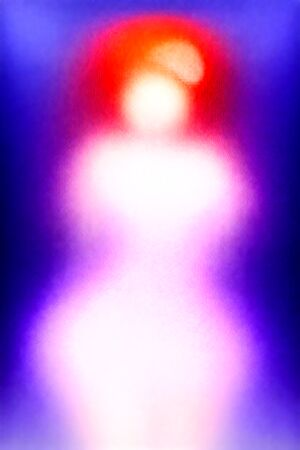
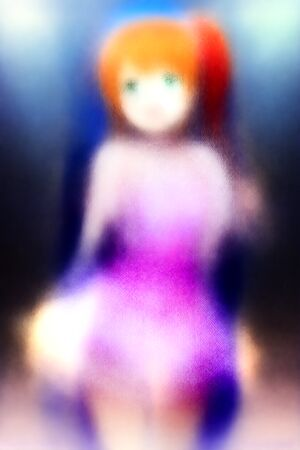
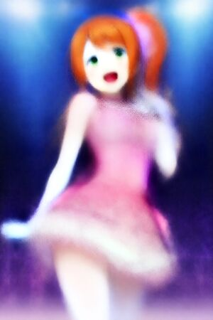
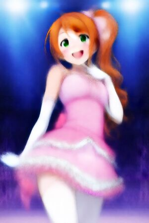
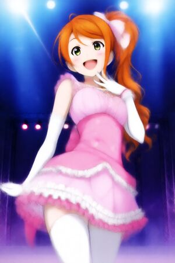
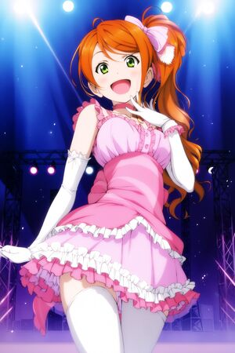
Two things follow from this:
- The seed is the starting noise. The same prompt with the same seed gives the same picture again. A new seed gives a new picture, which is why "make 4" gives four different girls from one prompt. If you like a picture, keep its seed and change small things in the prompt.
- The big decisions happen early. Pose, framing and body shape are settled in the first few steps, and faces, eyes and line work at the end. That's why the body drawing (section 5) only needs to steer the first 70% of the steps.
2The models we use
Four files, about 5.6 GB together, all running on your graphics card:
| Part | File | Size | What it does |
|---|---|---|---|
| Anima Aesthetic 1.1 | anima-aesthetic-v1.1 | 4.2 GB | The image model: a 2 billion parameter anime model trained on millions of pictures from Danbooru, an anime art archive where every picture is labelled with tags (hair colour, clothes, artist, show, year). Because it learned from those tags, it understands them very precisely. That is what makes the Love Live look possible. |
| Qwen3 0.6B | qwen_3_06b_base | 1.2 GB | The text encoder: reads your prompt and hands its meaning to Anima as numbers. |
| Qwen-Image VAE | qwen_image_vae | 0.25 GB | Anima works on a small compressed version of the picture (much faster). The VAE turns that into the full-size picture at the end. |
| Anima LLLite "any-test" | anima-lllite-any-test-like-v2 | 16 MB | A small add-on that lets a picture steer the drawing: here, a grey drawing of a body and pose. |
They run inside ComfyUI, the engine that loads the models and does the steps. The Studio page is a simple front for it. Claude installed a fixed, tested version of ComfyUI and never updates it on its own, so nothing breaks by surprise.
3Why it looks like Love Live
Love Live! Sunshine!! has a very recognisable look: crisp clean outlines, big round eyes with a bright highlight, saturated colours, neat pink blush hatching on the cheeks, the seaside light of Numazu. Anima learned that look from the show's own screenshots and art on Danbooru. Three tags call it up:
@murota yuuheiis the show's character designer, who drew how every Aqours girl looks. On Danbooru he is an artist tag, and the@tells Anima "draw like this artist". This tag carries most of the look.year 2016is when the show aired. The year pulls in that period's colouring and eye style.anime screenshotasks for a frame from the TV show itself rather than a fan painting.
The show's own name is left out on purpose. With love live! sunshine!! in the prompt, the model
starts drawing the show's actual characters. Below, the same prompt for a silver-haired girl of our own was run in
each style, with two seeds:
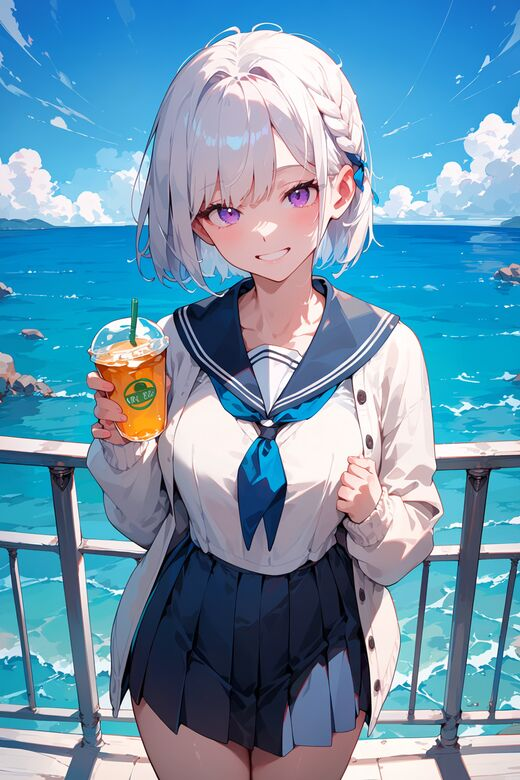
ll_tv: clearly Love Live, still our own girl. The default.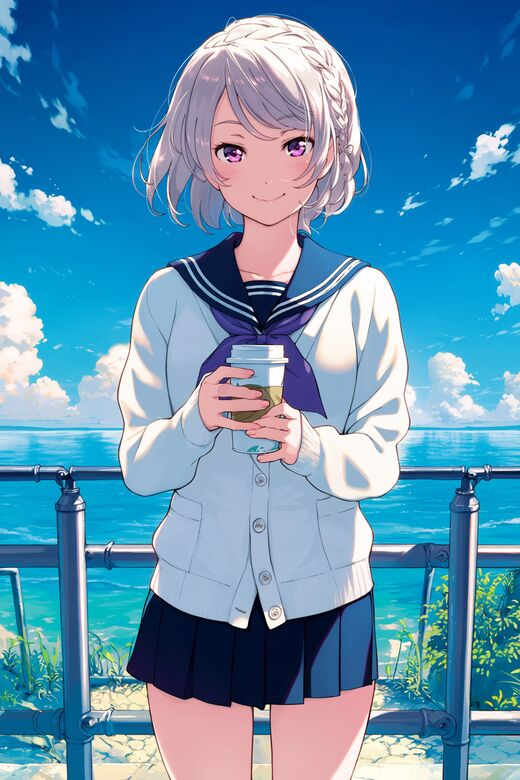
ll_card: official art instead of anime screenshot. Softer, like a game card.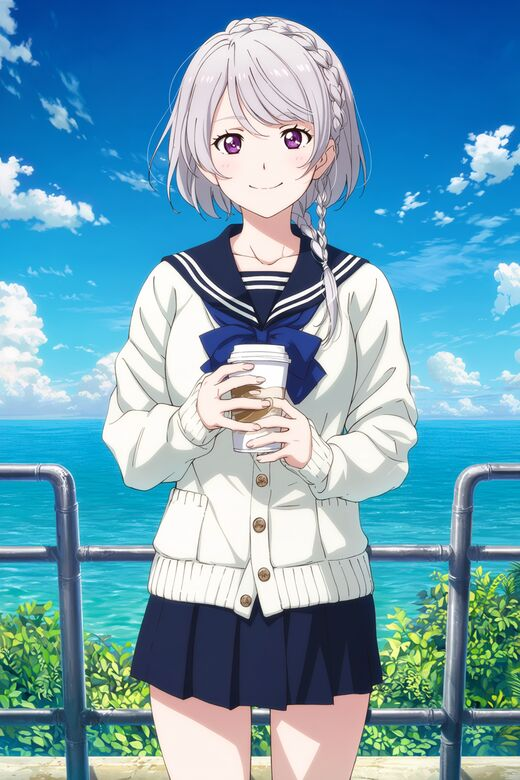
ll_2020: a little crisper and newer.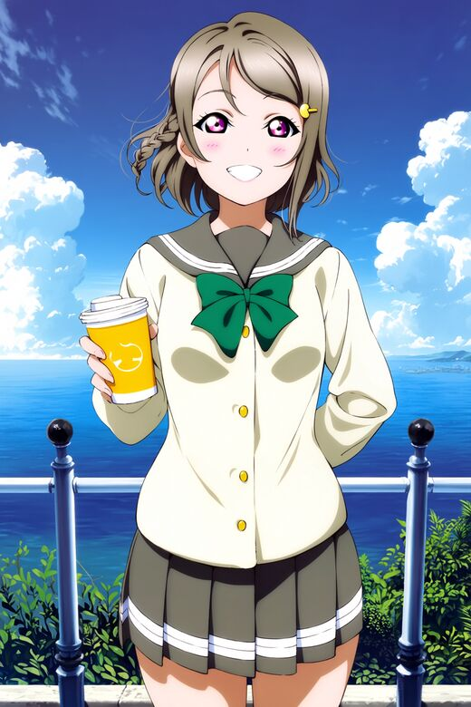
ll_canon: she turns into You Watanabe, uniform and all. Use it for fan art of the real characters.The one rule
The Love Live look comes from the designer tag. Keep@murota yuuhei in every prompt, and
leave words like "highly detailed" or "beautiful eyes" out: they pull the picture back to the generic look.4Writing prompts
Anima learned from tags: short labels separated by commas, written in lower case with spaces. A tag-style prompt works better than a sentence. The Studio builds the prompt for you from four boxes, always in the order Anima was trained on:
The character box: who she is
- Always start with
1girl, solo(or2girls,3girlsfor groups). - Hair: length + colour + style:
long orange hair, side ponytail,short silver hair, single braid,twin drills,hime cut,ahoge. - Eyes:
green eyes, and their shape (section 6):tareme(droopy),tsurime(sharp),jitome(half-lidded). - Clothes, piece by piece:
idol clothes, frilled dress, white gloves, hair ribbon,sailor school uniform, pleated skirt,yukata,oversized hoodie.
The scene box: where she is and what she does
- Framing, first:
full body(head to toe),cowboy shot(head to thighs),upper body,portrait(face and shoulders). - Place and light:
concert stage, stage lights,seaside railing, ocean,school rooftop, sunset,night, fireworks,rain. - Expression and action:
smile, open mouth,wink,looking back,holding umbrella,peace sign. - Idol extras:
sparkle,light particles,idol clothes,stage lights.
Making a tag stronger
Wrap it in brackets with a number: (curvy:1.6). 1.0 is normal; Anima needs about 1.4 to 1.8 to really
push a body tag. Above 2 things fall apart.
Things to avoid
The "Things to avoid" box (the negative prompt) lists what you don't want: hat, glasses,
bad hands, extra fingers. The usual quality words are already in it.
Finding the right tag
If you want something specific (a hairstyle, a piece of clothing), search for it on
Danbooru's tag groups, or just ask
Claude: "what's the tag for the hair buns on the side of the head?" (double bun). Tags with thousands of
pictures work best. Write them with spaces, not underscores (the Studio fixes that for you).
5Body types and poses
Words alone are unreliable for body types: chibi and curvy work, petite barely
does, and the model quietly drifts back to its favourite body. The Studio solves that with a body drawing: a plain
grey picture of a figure with the body and pose you want. The body adapter steers the drawing toward that shape, while
the style still comes from the prompt and the outfit and background from your tags.
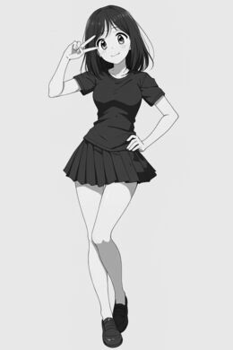
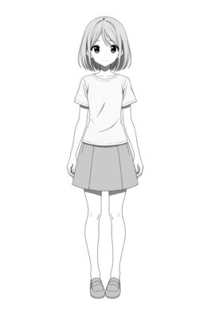
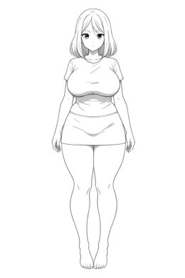
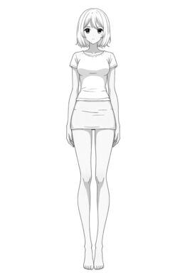
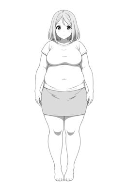
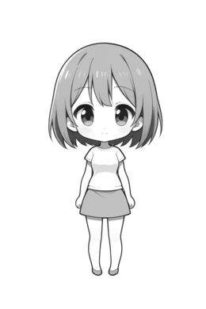
One idol, one stage, one seed, and only the body drawing changes:
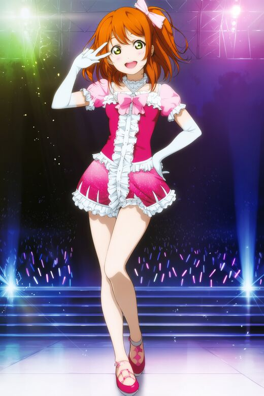
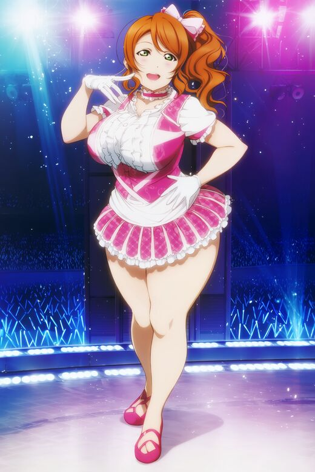
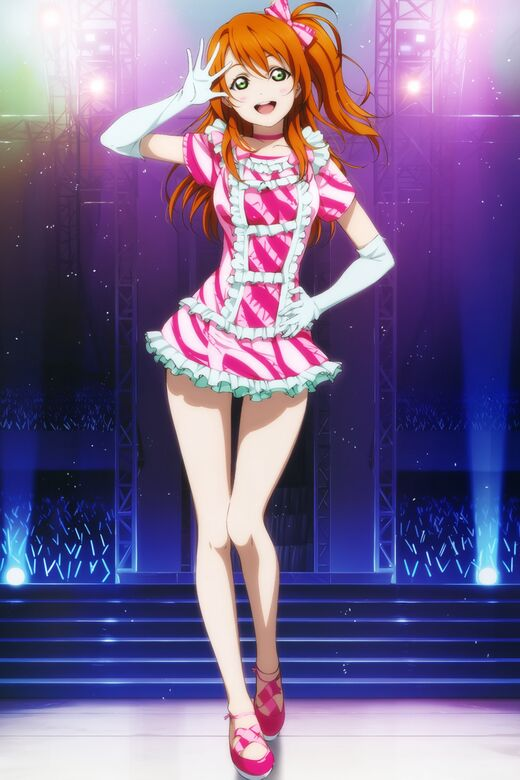
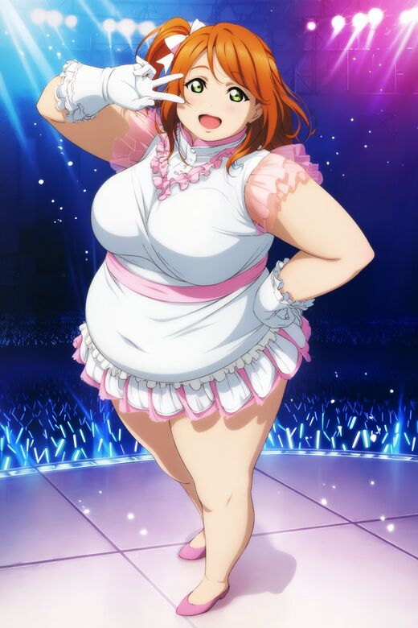
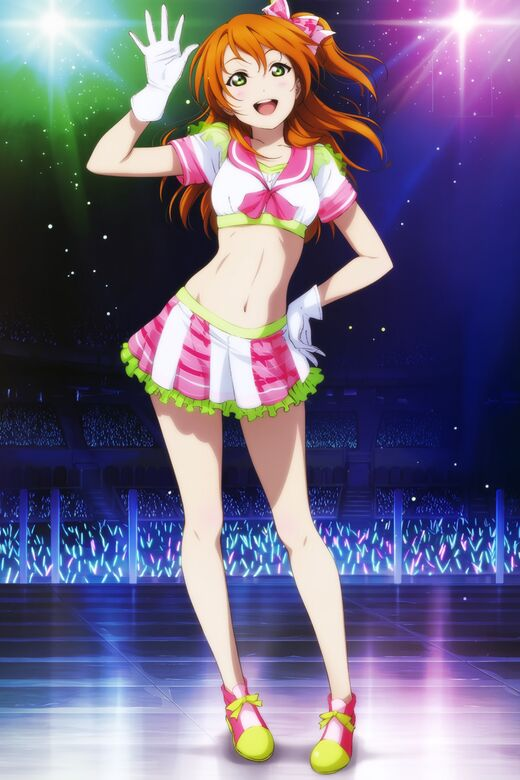
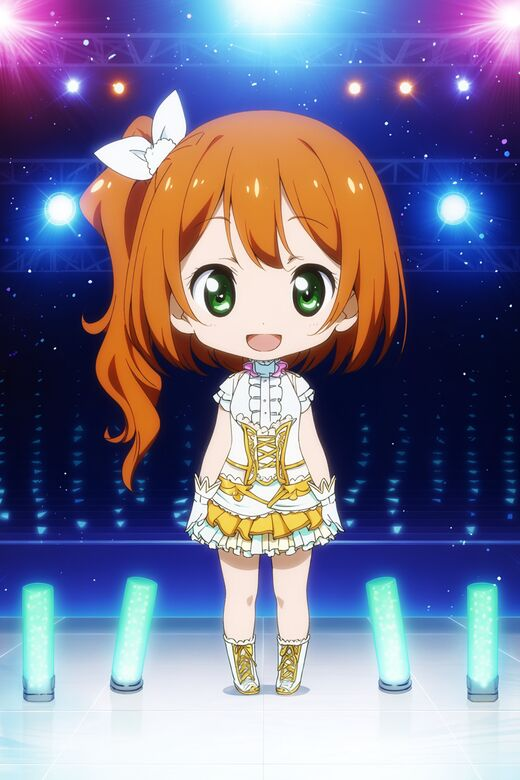
The stage, the lights, the orange side ponytail and the Love Live face stay. Only the body changes. The drawings are on a plain white background, so they don't drag their own scene in.
How strongly to follow the drawing
Strength (the slider under the drawings) is how hard the drawing pulls. 0.6 is the tested value. At 0.8 the girl copies more of the drawing: its stiff pose, its plain T-shirt shape, even its hair (the chibi on the right lost her side ponytail). At 0.4 the prompt gets more say again and the body type gets weaker. The drawing also fixes the pose, so use the idol / waving / jumping / sitting drawings for livelier pictures, or no drawing at all for the freest poses.
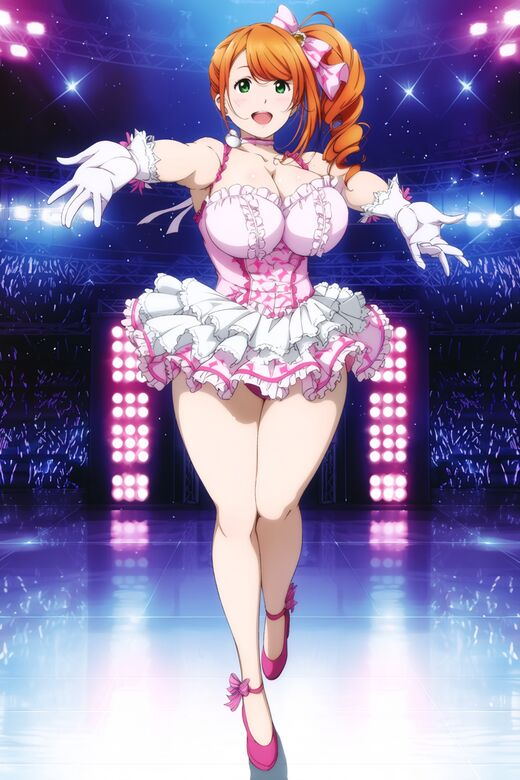
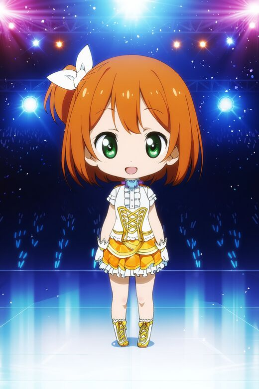
Your own body drawing
Any picture of one figure on a plain background works: a Studio picture of a body you like, a pose from a drawing, a 3D mannequin. Ask Claude: "make a body drawing from this picture". It turns it grey, sizes it and adds it to your body menu. Erase the guide lines on a drawn head first, or the model draws them as a fringe over one eye.6Avoiding the generic face
Most AI anime pictures share one face: big glossy eyes, tiny nose, soft gradient skin, the same smile. It shows up whenever the prompt gives the model nothing specific about how to draw. Two things beat it:
- A locked style. The designer tag already gives every face Love Live's eyes, line work and blush instead of the model's average. This is the biggest single step.
- Face features that real character designers use. Eye shape, eyebrows, freckles, a mole, a fang. Two or three of them make a face someone could recognise again.
Same girl, same seed, one feature changed at a time:
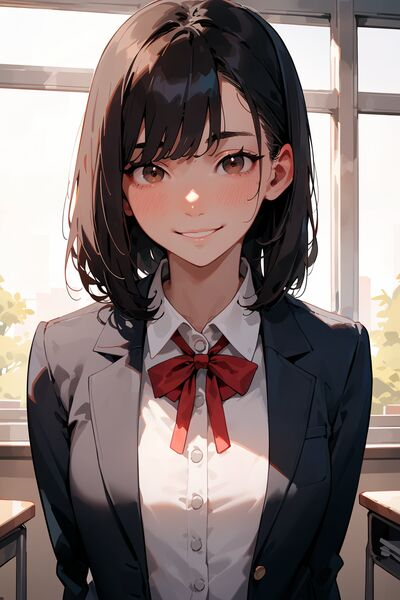
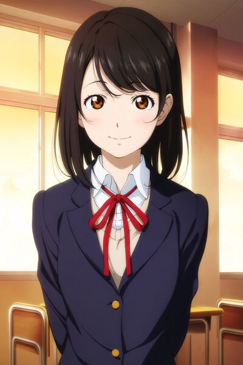
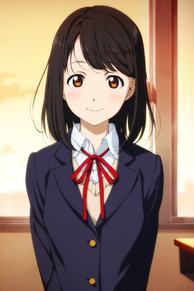
tareme: soft, droopy eyes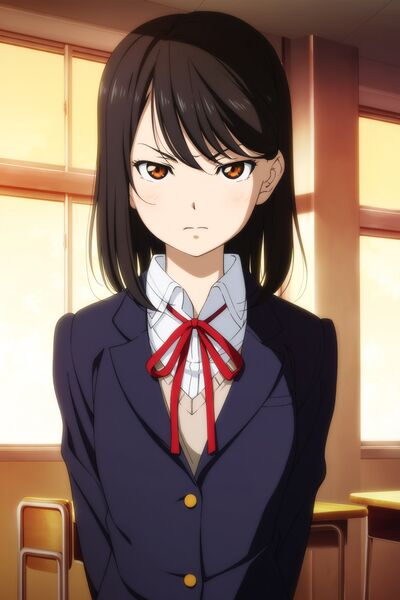
tsurime: sharp, upturned eyes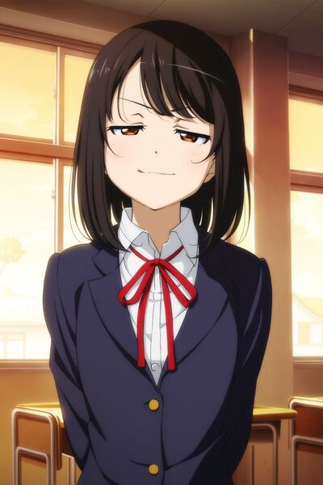
jitome: half-lidded, unimpressed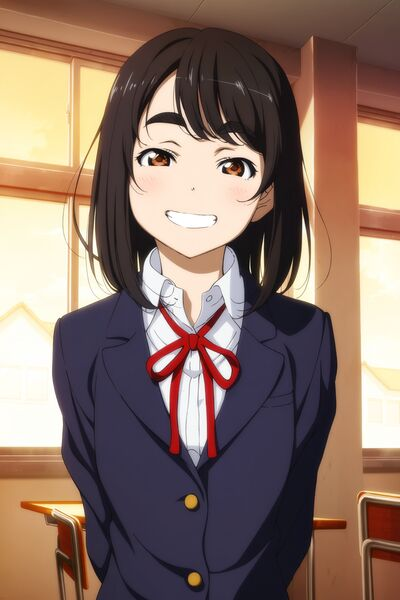
thick eyebrows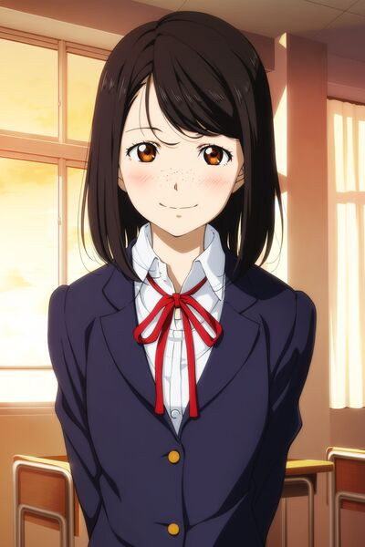
freckles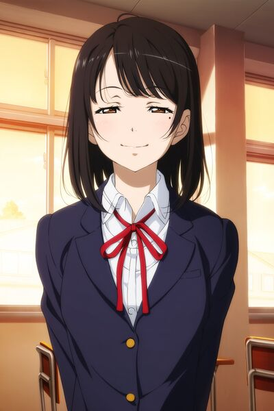
mole under eye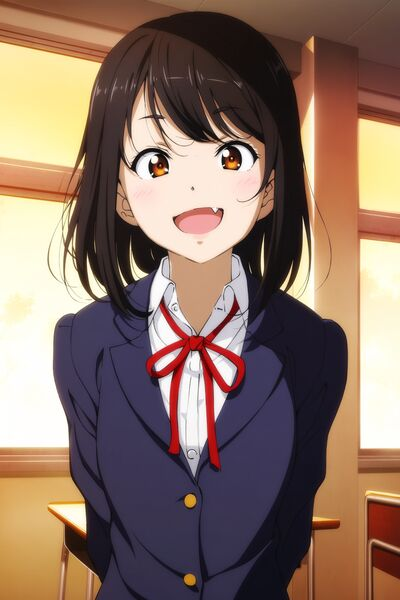
fang: a little canine tooth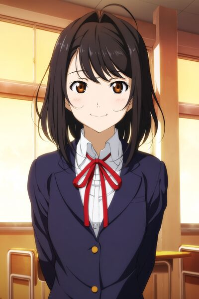
ahoge, hair intakes, sidelocks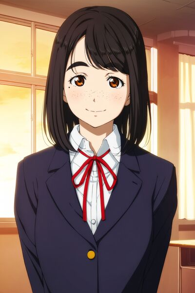
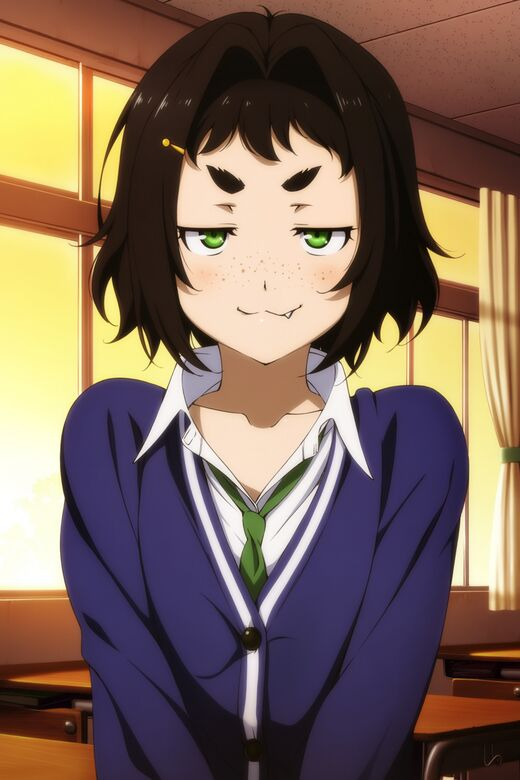
Quick checklist
- A style from the style menu, with the designer tag in it.
- No "highly detailed", "beautiful detailed eyes", "perfect face", "8k".
- An eye shape (
tareme/tsurime/jitome) plus one or two marks (freckles,mole under eye,thick eyebrows,fang). - An expression that isn't the default smile:
smug,pout,grin,:d,serious. - A distinct hair silhouette:
ahoge,hair intakes,twin drills,side ponytail,single braid.
7Make it yours: tuning the style
The Love Live look is the base. Small additions shift it toward a style of your own while the faces keep their Love Live bones. Same girl, same seed, one change each:
Combine what you like (for example year 2013 + pastel colors), then ask Claude to make it a
named style in your style menu. Claude tests it on a few characters first (a round, section 10) so it holds
up beyond one lucky picture.
Body type as part of your style
Your style can include a body: say "my girls are all a bit shorter and softer". Claude can make a body drawing for it and put both together as one preset.8Examples to copy
Every one of these is in the Studio's "Start from a ready-made prompt" menu, with these exact settings. Pick one, change the hair or the scene, and press Make pictures. Click a picture to see it bigger.
9The Studio and ComfyUI
The Studio (your everyday page)
Double-click Love Live Studio on your desktop. It opens in your browser:
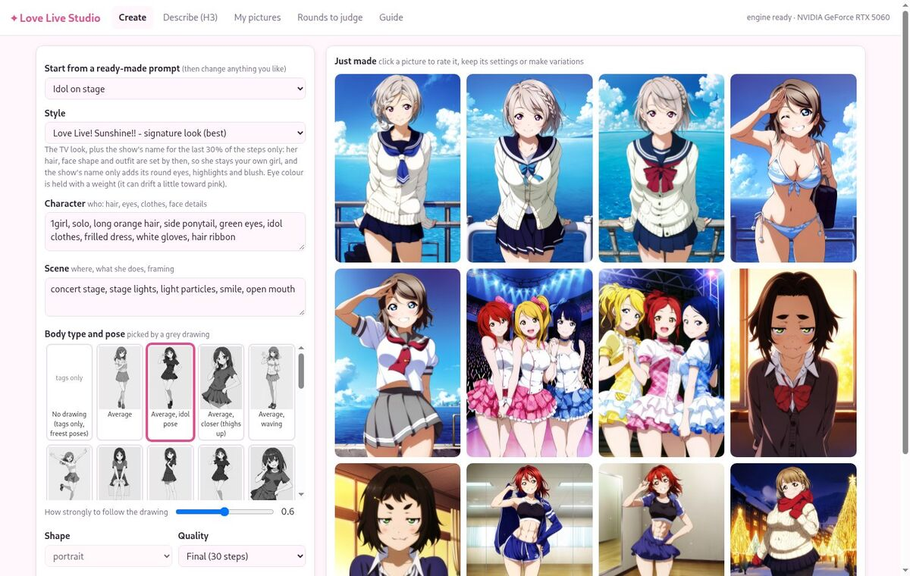
- Create: pick a ready-made prompt, style, character, scene, body drawing, then Make pictures. "What the AI reads" shows the full prompt.
- Click any picture: rate it (❤️ 👍 😐 👎), write what you think, Use these settings again, or make 4 variations.
- My pictures: everything you've made, searchable, with a "loved and liked only" filter.
- Rounds to judge: test pictures Claude made for you to compare (section 10).
- Your pictures are saved in the Studio's data folder under
outputs.
ComfyUI (if you're curious)
The engine has its own editor at 127.0.0.1:8188 while the Studio runs.
In Workflows you'll find Love Live - body drawing and Love Live - tags only, the same recipe laid out
as boxes and wires. Edit only the pink boxes and press Run. Tip: drag any picture from your outputs
folder onto ComfyUI and it reopens with that picture's exact settings. If you ever mess it up, ask Claude to reset it.
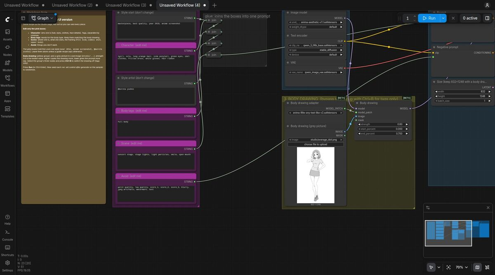
10Working with Claude
Open Claude, start a Code session in the Studio's folder, and talk normally. Vague is fine:
- "Make her look less generic."
- "I want a chubby girl at a summer festival, cuter than the example."
- "Can we make a style that's more my own? Softer colours, a bit retro."
- "Make a body drawing from this picture."
- "Why does she always have extra fingers?"
- "The page won't open." / "Pictures come out black." / "My disk is full."
Rounds
For anything with more than one possible answer, Claude makes a small round: a few versions side by side, with
one thing changed between them and the same seeds, so the comparison is fair. You'll find them in the Studio's
Rounds to judge tab. Rate the pictures, write what you think, and tell Claude you're done. Claude then writes the
winner into your recipe book (my/RECIPES.md), notes what you like (my/TASTE.md) and,
if it's reusable, adds it to your menus. Each round makes the next pictures better.
Claude also keeps everything safe in a history (git) as it goes, so nothing gets lost and any change can be undone.
11Speed on your PC
| Graphics card | Final (30 steps) | Quick draft | Notes |
|---|---|---|---|
| RTX 5060 8 GB (tested) | about 56 s | - | The first picture after starting takes a minute longer while the models load. |
| GTX 1070 8 GB | several minutes (estimate) | - | Older cards are much slower at this kind of maths. Use Quick draft to explore and Final for keepers; make 1-2 at a time. |
The Studio shows "about N seconds per picture" under the button once it has timed a few of yours. Close games and video while it works: they share the graphics card.
12A note on surprises
Anime models learned from an enormous collection of internet art, and some of it is revealing. Even an innocent prompt (a maid outfit, a swimsuit, a "curvy" body) can now and then come out more revealing than you meant. That's a quirk of the training data, not something you did. It stays on your PC; ignore it, delete it, or tell Claude if you'd like it to steer away from that in general.